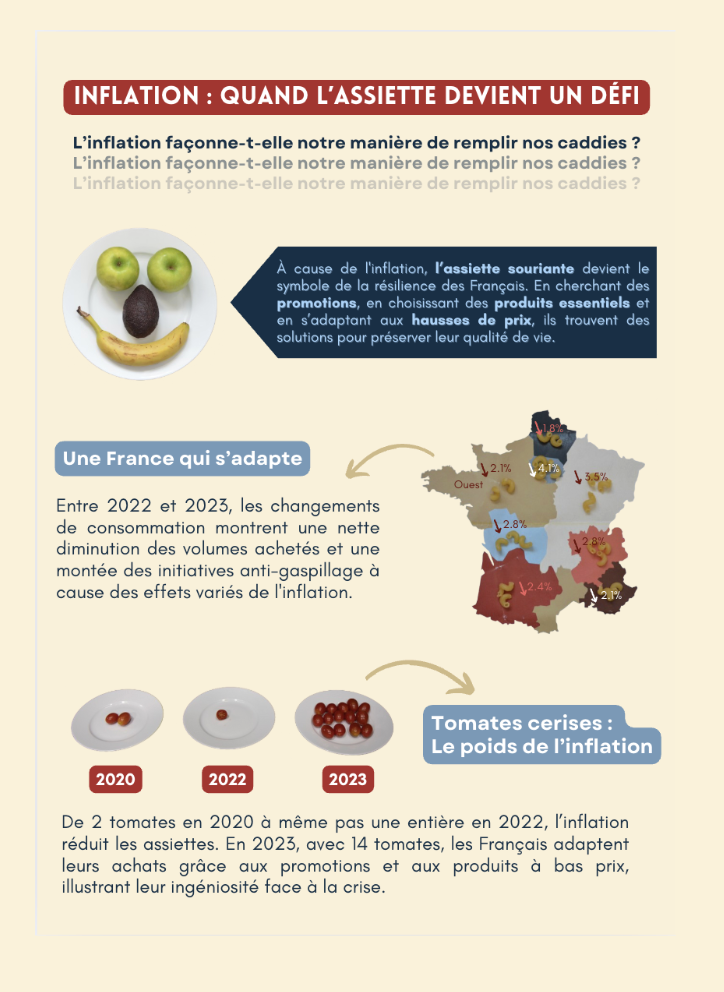

COMPRENDRE
Affiche de datavisualisation

Ce projet a été réalisé au semestre 3 dans le cadre d’un travail personnel à partir d’un article imposé sur l’inflation alimentaire en France. L’objectif était de transformer des données complexes en une représentation visuelle claire et compréhensible.
J’ai commencé par sélectionner les informations les plus importantes de l’article, puis je les ai hiérarchisées afin de les traduire sous forme graphique. L’affiche a été réalisée sur Illustrator en combinant des éléments photographiques et des compositions graphiques afin de rendre les données plus accessibles.
Avec du recul, ce travail m’a permis de mieux appréhender le lien entre analyse de données et communication visuelle.
AC 21.03 : Traiter des données avec des outils statistiques.